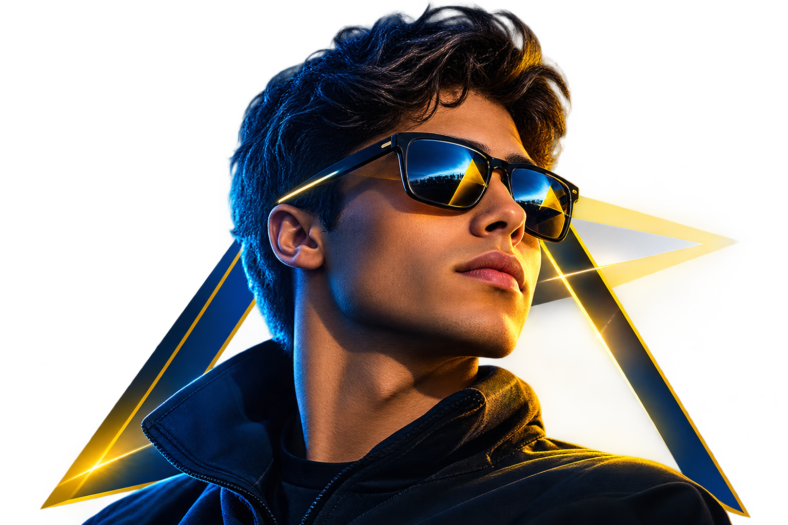
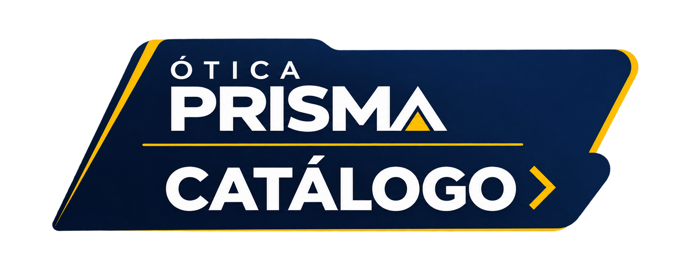

Da leitura ao dia a dia, cada rosto merece uma armação sob medida — e cada lente, a nitidez certa para o seu ângulo de visão.
Armações que unem precisão óptica e design autoral, com lentes que se adaptam ao seu grau e à sua rotina.
Ver armações→Proteção UV400 em cada peça, com lentes que filtram a luz sem apagar a sua personalidade.
Ver coleção→Conforto o dia inteiro, adaptadas por especialistas ao formato exato dos seus olhos.
Agendar adaptação→▲ SERVIÇOS
Somos uma ótica de bairro com estrutura de rede: optometristas no local, laboratório próprio e um atendimento que pensa em resolver — não só em vender.
▲ TEMPORADA
Uma seleção direto da vitrine da loja — troque as peças por fotos reais do seu catálogo quando estiver pronto.

Armação gatinho, acabamento dourado fosco

Armação gatinho, acabamento dourado fosco

Óculos de sol piloto, lente espelhada

Armação redonda, tartaruga
▲ QUEM JÁ ENXERGOU DIFERENTE
Troquei de ótica só pelo atendimento — fiquei pelo resultado. Enxergo detalhes que nem sabia que estava perdendo.
Mariana T.Cliente desde 2023O exame foi mais detalhado que qualquer outro que já fiz. Em dois dias a armação estava pronta.
Carlos E.Cliente desde 2024Levei meu pai para o exame gratuito e ele saiu de lá com óculos novos no mesmo dia. Atendimento sem pressa.
Juliana P.Cliente desde 2022Agende seu exame de vista gratuito e leve a armação escolhida no mesmo dia.